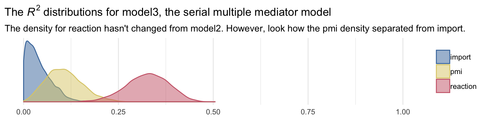
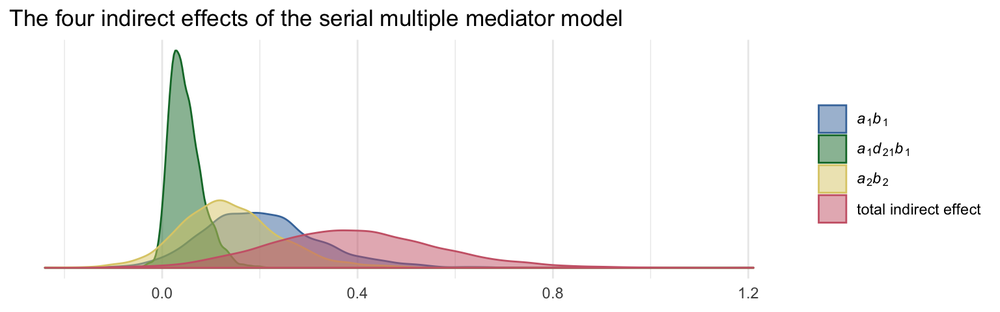

5 More Than One Mediator
5.1 The parallel multiple mediator model
5.2 Example using the presumed media influence study
Here we load a couple necessary packages, load the data, and take a glimpse().
library(tidyverse)
pmi <- read_csv("data/pmi/pmi.csv")
glimpse(pmi)
#> Observations: 123
#> Variables: 6
#> $ cond <int> 1, 0, 1, 0, 0, 0, 0, 1, 0, 0, 1, 0, 1, 0, 1, 1, 0, 0, 1, 0, 1, 1, 1, 1, 1, 0, 1, 0, 1, 0...
#> $ pmi <dbl> 7.0, 6.0, 5.5, 6.5, 6.0, 5.5, 3.5, 6.0, 4.5, 7.0, 1.0, 6.0, 5.0, 7.0, 7.0, 7.0, 4.5, 3.5...
#> $ import <int> 6, 1, 6, 6, 5, 1, 1, 6, 6, 6, 3, 3, 4, 7, 1, 6, 3, 3, 2, 4, 4, 6, 7, 4, 5, 4, 6, 5, 5, 7...
#> $ reaction <dbl> 5.25, 1.25, 5.00, 2.75, 2.50, 1.25, 1.50, 4.75, 4.25, 6.25, 1.25, 2.75, 3.75, 5.00, 4.00...
#> $ gender <int> 1, 1, 1, 0, 1, 1, 0, 1, 1, 1, 0, 0, 0, 0, 0, 0, 0, 0, 0, 1, 0, 0, 1, 1, 0, 1, 0, 0, 0, 1...
#> $ age <dbl> 51.0, 40.0, 26.0, 21.0, 27.0, 25.0, 23.0, 25.0, 22.0, 24.0, 22.0, 21.0, 23.0, 21.0, 22.0...Let’s load brms.
library(brms)Bayesian correlations, recall, just take an intercepts-only multivariate model.
model1 <-
brm(data = pmi, family = gaussian,
cbind(pmi, import) ~ 1,
chains = 4, cores = 4)A little indexing with the posterior_summary() function will get us the Bayesian correlation with its posterior \(SD\) and intervals.
posterior_summary(model1)["rescor__pmi__import", ] %>% round(digits = 3)
#> Estimate Est.Error Q2.5 Q97.5
#> 0.277 0.085 0.109 0.441As with single mediation models, the multiple mediation model requires we carefully construct the formula for each criterion. We’ll continue to use the multiple bf() approach.
m1_model <- bf(import ~ 1 + cond)
m2_model <- bf(pmi ~ 1 + cond)
y_model <- bf(reaction ~ 1 + import + pmi + cond)And now we fit the model.
model2 <-
brm(data = pmi, family = gaussian,
y_model + m1_model + m2_model + set_rescor(FALSE),
chains = 4, cores = 4)print(model2, digits = 3)
#> Family: MV(gaussian, gaussian, gaussian)
#> Links: mu = identity; sigma = identity
#> mu = identity; sigma = identity
#> mu = identity; sigma = identity
#> Formula: reaction ~ 1 + import + pmi + cond
#> import ~ 1 + cond
#> pmi ~ 1 + cond
#> Data: pmi (Number of observations: 123)
#> Samples: 4 chains, each with iter = 2000; warmup = 1000; thin = 1;
#> total post-warmup samples = 4000
#>
#> Population-Level Effects:
#> Estimate Est.Error l-95% CI u-95% CI Eff.Sample Rhat
#> reaction_Intercept -0.156 0.552 -1.237 0.908 4000 1.000
#> import_Intercept 3.904 0.210 3.478 4.313 4000 0.999
#> pmi_Intercept 5.374 0.163 5.059 5.694 4000 0.999
#> reaction_import 0.324 0.072 0.184 0.465 4000 0.999
#> reaction_pmi 0.398 0.096 0.216 0.586 4000 1.000
#> reaction_cond 0.101 0.237 -0.372 0.568 4000 0.999
#> import_cond 0.632 0.313 0.025 1.285 4000 0.999
#> pmi_cond 0.481 0.246 -0.007 0.959 4000 0.999
#>
#> Family Specific Parameters:
#> Estimate Est.Error l-95% CI u-95% CI Eff.Sample Rhat
#> sigma_reaction 1.302 0.086 1.146 1.480 4000 0.999
#> sigma_import 1.734 0.113 1.528 1.974 4000 0.999
#> sigma_pmi 1.317 0.085 1.161 1.494 4000 1.000
#>
#> Samples were drawn using sampling(NUTS). For each parameter, Eff.Sample
#> is a crude measure of effective sample size, and Rhat is the potential
#> scale reduction factor on split chains (at convergence, Rhat = 1).Because we have three criteria, we’ll have three Bayesian \(R^2\) posteriors.
library(ggthemes)
bayes_R2(model2, summary = F) %>%
as_tibble() %>%
gather() %>%
mutate(key = str_remove(key, "R2_")) %>%
ggplot(aes(x = value, color = key, fill = key)) +
geom_density(alpha = .5) +
scale_color_ptol() +
scale_fill_ptol() +
scale_y_continuous(NULL, breaks = NULL) +
coord_cartesian(xlim = 0:1) +
labs(title = expression(paste("Our ", italic("R")^{2}, " distributions")),
subtitle = "The densities for import and pmi are asymmetric, small, and largely overlapping. The density for reaction is Gaussian and\nmore impressive in magnitude.",
x = NULL) +
theme_minimal() +
theme(legend.title = element_blank())
It’ll take a bit of data wrangling to rename our model parameters to the \(a\), \(b\)… configuration. We’ll compute the indirect effects and \(c\), too.
post <- posterior_samples(model2)
post<-
post %>%
mutate(a1 = b_import_cond,
a2 = b_pmi_cond,
b1 = b_reaction_import,
b2 = b_reaction_pmi,
c_prime = b_reaction_cond) %>%
mutate(a1b1 = a1*b1,
a2b2 = a2*b2) %>%
mutate(c = c_prime + a1b1 + a2b2)Here are their summaries. Since Bayesians use means, medians, and sometimes the mode to describe the central tendencies of a parameter, this time we’ll mix it up and just use the median.
post %>%
select(a1:c) %>%
gather() %>%
group_by(key) %>%
summarize(median = median(value),
ll = quantile(value, probs = .025),
ul = quantile(value, probs = .975)) %>%
mutate_if(is_double, round, digits = 3)
#> # A tibble: 8 x 4
#> key median ll ul
#> <chr> <dbl> <dbl> <dbl>
#> 1 a1 0.63 0.025 1.28
#> 2 a1b1 0.195 0.008 0.452
#> 3 a2 0.478 -0.007 0.959
#> 4 a2b2 0.181 -0.003 0.428
#> 5 b1 0.323 0.184 0.465
#> 6 b2 0.398 0.216 0.586
#> # ... with 2 more rowspost %>%
mutate(dif = a1b1*b1) %>%
summarize(median = median(dif),
ll = quantile(dif, probs = .025),
ul = quantile(dif, probs = .975)) %>%
mutate_if(is_double, round, digits = 3)
#> median ll ul
#> 1 0.061 0.002 0.187In the middle paragraph of page 158, Hayes showd how the mean difference in imprt between the two cond groups multiplied by b1, the coefficient of import predicting reaction, is equal to the a1b1 indirect effect. He does this with simple algebra using the group means and the point estimates.
Let’s follow along. First, we’ll get those two group means and save them as numbers to arbitrary precision.
(
import_means <-
pmi %>%
group_by(cond) %>%
summarize(mean = mean(import))
)
#> # A tibble: 2 x 2
#> cond mean
#> <int> <dbl>
#> 1 0 3.91
#> 2 1 4.53
(cond_0_import_mean <- import_means[1, 2] %>% pull())
#> [1] 3.91
(cond_1_import_mean <- import_means[2, 2] %>% pull())
#> [1] 4.53Here we follow the formula in the last sentence of the paragraph and then compare the results to the posterior for a1b1.
post %>%
# Using his formula to make our new vector, `handmade a1b1`
mutate(`handmade a1b1` = (cond_1_import_mean - cond_0_import_mean)*b1) %>%
# Here's all the usual data wrangling
select(a1b1, `handmade a1b1`) %>%
gather() %>%
group_by(key) %>%
summarize(mean = mean(value),
median = median(value),
ll = quantile(value, probs = .025),
ul = quantile(value, probs = .975)) %>%
mutate_if(is_double, round, digits = 3)
#> # A tibble: 2 x 5
#> key mean median ll ul
#> <chr> <dbl> <dbl> <dbl> <dbl>
#> 1 a1b1 0.205 0.195 0.008 0.452
#> 2 handmade a1b1 0.203 0.203 0.116 0.292Yep, at the mean, Hayes’s formula is spot on. But the distributions are distinct. They differ slightly at the median and vastly in the widths of the posterior intervals. I’m no mathematician, so take this with a grain of salt, but I suspect this has to do with how we used fixed values (i.e., the difference of the subsample means) to compute handmade a1b1, but all the components in a1b1 were estimated.
Here we’ll follow the same protocol for a2b2.
(
pmi_means <-
pmi %>%
group_by(cond) %>%
summarize(mean = mean(pmi))
)
#> # A tibble: 2 x 2
#> cond mean
#> <int> <dbl>
#> 1 0 5.38
#> 2 1 5.85
cond_0_pmi_mean <- pmi_means[1, 2] %>% pull()
cond_1_pmi_mean <- pmi_means[2, 2] %>% pull()post %>%
mutate(`handmade a2b2` = (cond_1_pmi_mean - cond_0_pmi_mean)*b2) %>%
select(a2b2, `handmade a2b2`) %>%
gather() %>%
group_by(key) %>%
summarize(mean = mean(value),
median = median(value),
ll = quantile(value, probs = .025),
ul = quantile(value, probs = .975)) %>%
mutate_if(is_double, round, digits = 3)
#> # A tibble: 2 x 5
#> key mean median ll ul
#> <chr> <dbl> <dbl> <dbl> <dbl>
#> 1 a2b2 0.191 0.181 -0.003 0.428
#> 2 handmade a2b2 0.19 0.19 0.103 0.279To get the total indirect effect as discussed on page 160, we simply add the a1b1 and a2b2 columns.
post <-
post %>%
mutate(total_indirect_effect = a1b1 + a2b2)
post %>%
select(total_indirect_effect) %>%
summarize(mean = mean(total_indirect_effect),
median = median(total_indirect_effect),
ll = quantile(total_indirect_effect, probs = .025),
ul = quantile(total_indirect_effect, probs = .975)) %>%
mutate_if(is_double, round, digits = 3)
#> mean median ll ul
#> 1 0.395 0.389 0.11 0.725To use the equations on the top of page 161, we’ll just work directly with the original vectors in post.
post %>%
mutate(Y_bar_given_X_1 = b_import_Intercept + b_reaction_cond*1 + b_reaction_import*b_import_Intercept + b_reaction_pmi*b_pmi_Intercept,
Y_bar_given_X_0 = b_import_Intercept + b_reaction_cond*0 + b_reaction_import*b_import_Intercept + b_reaction_pmi*b_pmi_Intercept) %>%
mutate(`c_prime by hand` = Y_bar_given_X_1 - Y_bar_given_X_0) %>%
select(c_prime, `c_prime by hand`) %>%
gather() %>%
group_by(key) %>%
summarize(mean = mean(value),
median = median(value),
ll = quantile(value, probs = .025),
ul = quantile(value, probs = .975))
#> # A tibble: 2 x 5
#> key mean median ll ul
#> <chr> <dbl> <dbl> <dbl> <dbl>
#> 1 c_prime 0.101 0.0991 -0.372 0.568
#> 2 c_prime by hand 0.101 0.0991 -0.372 0.568We computed c a while ago.
post %>%
summarize(mean = mean(c),
median = median(c),
ll = quantile(c, probs = .025),
ul = quantile(c, probs = .975))
#> mean median ll ul
#> 1 0.496 0.501 -0.0544 1.03And c minus c_prime is straight subtraction.
post %>%
mutate(`c minus c_prime` = c - c_prime) %>%
summarize(mean = mean(`c minus c_prime`),
median = median(`c minus c_prime`),
ll = quantile(`c minus c_prime`, probs = .025),
ul = quantile(`c minus c_prime`, probs = .975))
#> mean median ll ul
#> 1 0.395 0.389 0.11 0.7255.3 Statistical inference
5.3.1 Inference about the direct and total effects.
We’re not going to bother with \(p\)-values and we’ve already computed the 95% Bayesian credible intervals, above. But we can examine our parameters with a density plot.
post %>%
select(c, c_prime) %>%
gather() %>%
ggplot(aes(x = value, fill = key, color = key)) +
geom_vline(xintercept = 0, color = "black") +
geom_density(alpha = .5) +
scale_color_ptol(NULL) +
scale_fill_ptol(NULL) +
scale_y_continuous(NULL, breaks = NULL) +
labs(title = expression(paste("It appears zero is more credible for the direct effect, ", italic(c), "', than it is the total effect, ", italic(c), ".")),
x = NULL) +
coord_cartesian(xlim = -c(-1.5, 1.5)) +
theme_minimal()
5.3.2 Inference about specific indirect effects.
Again, no need to worry about bootstrapping within the Bayesian paradigm. We can compute high-quality percentile-based intervals with our HMC-based posterior samples.
post %>%
select(a1b1, a2b2) %>%
gather() %>%
group_by(key) %>%
summarize(ll = quantile(value, probs = .025),
ul = quantile(value, probs = .975)) %>%
mutate_if(is.double, round, digits = 3)
#> # A tibble: 2 x 3
#> key ll ul
#> <chr> <dbl> <dbl>
#> 1 a1b1 0.008 0.452
#> 2 a2b2 -0.003 0.4285.3.3 Pairwise comparisons between specific indirect effects.
Within the Bayesian paradigm, it’s straightforward to compare indirect effects. All one has to do is compute a difference score and summarize it somehow. Here it is, a1b1 minus a2b2
post <-
post %>%
mutate(difference = a1b1 - a2b2)
post %>%
summarize(mean = mean(difference),
ll = quantile(difference, probs = .025),
ul = quantile(difference, probs = .975)) %>%
mutate_if(is.double, round, digits = 3)
#> mean ll ul
#> 1 0.014 -0.308 0.335Why not plot?
post %>%
ggplot(aes(x = difference)) +
geom_vline(xintercept = 0, color = "black", linetype = 2) +
geom_density(color = "black", fill = "black", alpha = .5) +
scale_y_continuous(NULL, breaks = NULL) +
labs(title = "The difference score between the indirect effects",
subtitle = expression(paste("No ", italic(p), "-value or 95% intervals needed for this one.")),
x = NULL) +
coord_cartesian(xlim = -1:1) +
theme_minimal()
Although note well that this does not mean their difference is exactly zero. The shape of the posterior distribution testifies our uncertainty in their difference. Our best bet is that the difference is approximately zero, but it could easily be plus or minus a quarter of a point or more.
5.3.4 Inference about the total indirect effect.
Here’s the plot.
post %>%
ggplot(aes(x = total_indirect_effect, fill = factor(0), color = factor(0))) +
geom_density(alpha = .5) +
scale_color_ptol() +
scale_fill_ptol() +
scale_y_continuous(NULL, breaks = NULL) +
labs(title = "The total indirect effect of condition on reaction",
subtitle = expression(paste("This is the sum of ", italic(a)[1], italic(b)[1], " and ", italic(a)[2], italic(b)[2], ". It's wide and uncertain.")),
x = NULL) +
theme_minimal() +
theme(legend.position = "none")
5.4 The serial multiple mediator model
5.4.1 Direct and indirect effects in a serial multiple mediator model.
5.4.2 Statistical inference.
5.4.3 Example from the presumed media influence study.
The model syntax is similar to the earlier multiple mediator model. All we change is adding import to the list of predictors in the m2_model.
m1_model <- bf(import ~ 1 + cond)
m2_model <- bf(pmi ~ 1 + import + cond)
y_model <- bf(reaction ~ 1 + import + pmi + cond)model3 <-
brm(data = pmi, family = gaussian,
y_model + m1_model + m2_model + set_rescor(FALSE),
chains = 4, cores = 4)print(model3)
#> Family: MV(gaussian, gaussian, gaussian)
#> Links: mu = identity; sigma = identity
#> mu = identity; sigma = identity
#> mu = identity; sigma = identity
#> Formula: reaction ~ 1 + import + pmi + cond
#> import ~ 1 + cond
#> pmi ~ 1 + import + cond
#> Data: pmi (Number of observations: 123)
#> Samples: 4 chains, each with iter = 2000; warmup = 1000; thin = 1;
#> total post-warmup samples = 4000
#>
#> Population-Level Effects:
#> Estimate Est.Error l-95% CI u-95% CI Eff.Sample Rhat
#> reaction_Intercept -0.15 0.53 -1.20 0.89 4000 1.00
#> import_Intercept 3.91 0.23 3.47 4.36 4000 1.00
#> pmi_Intercept 4.61 0.31 3.99 5.23 4000 1.00
#> reaction_import 0.32 0.07 0.19 0.47 4000 1.00
#> reaction_pmi 0.40 0.09 0.22 0.58 4000 1.00
#> reaction_cond 0.10 0.23 -0.36 0.55 4000 1.00
#> import_cond 0.62 0.32 -0.01 1.25 4000 1.00
#> pmi_import 0.20 0.07 0.06 0.33 4000 1.00
#> pmi_cond 0.35 0.24 -0.12 0.83 4000 1.00
#>
#> Family Specific Parameters:
#> Estimate Est.Error l-95% CI u-95% CI Eff.Sample Rhat
#> sigma_reaction 1.30 0.08 1.15 1.47 4000 1.00
#> sigma_import 1.73 0.11 1.53 1.97 4000 1.00
#> sigma_pmi 1.28 0.08 1.13 1.45 4000 1.00
#>
#> Samples were drawn using sampling(NUTS). For each parameter, Eff.Sample
#> is a crude measure of effective sample size, and Rhat is the potential
#> scale reduction factor on split chains (at convergence, Rhat = 1).The \(R^2\) posterior densities:
bayes_R2(model3, summary = F) %>%
as_tibble() %>%
gather() %>%
mutate(key = str_remove(key, "R2_")) %>%
ggplot(aes(x = value, color = key, fill = key)) +
geom_density(alpha = .5) +
scale_color_ptol() +
scale_fill_ptol() +
scale_y_continuous(NULL, breaks = NULL) +
coord_cartesian(xlim = 0:1) +
labs(title = expression(paste("The ", italic("R")^{2}, " distributions for model3, the serial multiple mediator model")),
subtitle = "The density for reaction hasn't changed from model2. However, look how the pmi density separated from import.",
x = NULL) +
theme_minimal() +
theme(legend.title = element_blank())
As before, here we’ll save the posterior samples into a data frame and rename the parameters a bit to match Hayes’s nomenclature.
post <- posterior_samples(model3)
post <-
post %>%
mutate(a1 = b_import_cond,
a2 = b_pmi_cond,
b1 = b_reaction_import,
b2 = b_reaction_pmi,
c_prime = b_reaction_cond,
d21 = b_pmi_import)Here are the parameter summaries for the pathways depicted in Figure 5.6.
post %>%
select(a1:d21) %>%
gather() %>%
group_by(key) %>%
summarize(mean = mean(value),
median = median(value),
ll = quantile(value, probs = .025),
ul = quantile(value, probs = .975)) %>%
mutate_if(is_double, round, digits = 3)
#> # A tibble: 6 x 5
#> key mean median ll ul
#> <chr> <dbl> <dbl> <dbl> <dbl>
#> 1 a1 0.625 0.62 -0.014 1.25
#> 2 a2 0.354 0.355 -0.121 0.833
#> 3 b1 0.325 0.325 0.187 0.466
#> 4 b2 0.396 0.397 0.217 0.582
#> 5 c_prime 0.103 0.1 -0.363 0.554
#> 6 d21 0.197 0.198 0.062 0.331To get our version of the parameter summaries in Table 5.2, all you have to do is add the summaries for the intercepts to what we did above.
post %>%
rename(im1 = b_import_Intercept,
im2 = b_pmi_Intercept,
iy = b_reaction_Intercept) %>%
select(a1:d21, starts_with("i")) %>%
gather() %>%
group_by(key) %>%
summarize(mean = mean(value),
median = median(value),
ll = quantile(value, probs = .025),
ul = quantile(value, probs = .975)) %>%
mutate_if(is_double, round, digits = 3)
#> # A tibble: 9 x 5
#> key mean median ll ul
#> <chr> <dbl> <dbl> <dbl> <dbl>
#> 1 a1 0.625 0.62 -0.014 1.25
#> 2 a2 0.354 0.355 -0.121 0.833
#> 3 b1 0.325 0.325 0.187 0.466
#> 4 b2 0.396 0.397 0.217 0.582
#> 5 c_prime 0.103 0.1 -0.363 0.554
#> 6 d21 0.197 0.198 0.062 0.331
#> # ... with 3 more rowsHere we compute the four indirect effects.
post <-
post %>%
mutate(a1b1 = a1*b1,
a2b2 = a2*b2,
a1d21b2 = a1*d21*b2) %>%
mutate(total_indirect_effect = a1b1 + a2b2 + a1d21b2)The summaries for the indirect effects are as follows.
post %>%
select(a1b1:total_indirect_effect) %>%
gather() %>%
group_by(key) %>%
summarize(mean = mean(value),
median = median(value),
ll = quantile(value, probs = .025),
ul = quantile(value, probs = .975)) %>%
mutate_if(is_double, round, digits = 3)
#> # A tibble: 4 x 5
#> key mean median ll ul
#> <chr> <dbl> <dbl> <dbl> <dbl>
#> 1 a1b1 0.204 0.195 -0.004 0.467
#> 2 a1d21b2 0.048 0.042 -0.001 0.13
#> 3 a2b2 0.139 0.131 -0.048 0.369
#> 4 total_indirect_effect 0.392 0.384 0.073 0.752To get the contrasts Hayes presented in page 179, we just do a little subtraction.
post %>%
transmute(C1 = a1b1 - a2b2,
C2 = a1b1 - a1d21b2,
C3 = a2b2 - a1d21b2) %>%
gather() %>%
group_by(key) %>%
summarize(mean = mean(value),
median = median(value),
ll = quantile(value, probs = .025),
ul = quantile(value, probs = .975)) %>%
mutate_if(is_double, round, digits = 3)
#> # A tibble: 3 x 5
#> key mean median ll ul
#> <chr> <dbl> <dbl> <dbl> <dbl>
#> 1 C1 0.065 0.063 -0.248 0.386
#> 2 C2 0.156 0.143 -0.004 0.397
#> 3 C3 0.091 0.086 -0.113 0.326And just because it’s fun, we may as well plot our indirect effects.
# this will help us save a little space with the plot code
my_labels <- c(expression(paste(italic(a)[1], italic(b)[1])),
expression(paste(italic(a)[1], italic(d)[21], italic(b)[1])),
expression(paste(italic(a)[2], italic(b)[2])),
"total indirect effect")
post %>%
select(a1b1:total_indirect_effect) %>%
gather() %>%
ggplot(aes(x = value, fill = key, color = key)) +
geom_density(alpha = .5) +
scale_color_ptol(NULL, labels = my_labels,
guide = guide_legend(label.hjust = 0)) +
scale_fill_ptol(NULL, labels = my_labels,
guide = guide_legend(label.hjust = 0)) +
scale_y_continuous(NULL, breaks = NULL) +
labs(title = "The four indirect effects of the serial multiple mediator model",
x = NULL) +
theme_minimal()
Session info
sessionInfo()
#> R version 3.5.1 (2018-07-02)
#> Platform: x86_64-apple-darwin15.6.0 (64-bit)
#> Running under: macOS High Sierra 10.13.4
#>
#> Matrix products: default
#> BLAS: /Library/Frameworks/R.framework/Versions/3.5/Resources/lib/libRblas.0.dylib
#> LAPACK: /Library/Frameworks/R.framework/Versions/3.5/Resources/lib/libRlapack.dylib
#>
#> locale:
#> [1] en_US.UTF-8/en_US.UTF-8/en_US.UTF-8/C/en_US.UTF-8/en_US.UTF-8
#>
#> attached base packages:
#> [1] stats graphics grDevices utils datasets methods base
#>
#> other attached packages:
#> [1] bindrcpp_0.2.2 ggthemes_3.5.0 brms_2.3.4 Rcpp_0.12.17 forcats_0.3.0 stringr_1.3.1
#> [7] dplyr_0.7.6 purrr_0.2.5 readr_1.1.1 tidyr_0.8.1 tibble_1.4.2 ggplot2_3.0.0
#> [13] tidyverse_1.2.1
#>
#> loaded via a namespace (and not attached):
#> [1] nlme_3.1-137 matrixStats_0.53.1 xts_0.10-2 lubridate_1.7.4 threejs_0.3.1
#> [6] httr_1.3.1 rprojroot_1.3-2 rstan_2.17.3 tools_3.5.1 backports_1.1.2
#> [11] utf8_1.1.4 R6_2.2.2 DT_0.4 lazyeval_0.2.1 colorspace_1.3-2
#> [16] withr_2.1.2 tidyselect_0.2.4 gridExtra_2.3 mnormt_1.5-5 Brobdingnag_1.2-5
#> [21] compiler_3.5.1 cli_1.0.0 rvest_0.3.2 shinyjs_1.0 xml2_1.2.0
#> [26] labeling_0.3 colourpicker_1.0 bookdown_0.7 scales_0.5.0 dygraphs_1.1.1.5
#> [31] mvtnorm_1.0-8 psych_1.8.4 ggridges_0.5.0 digest_0.6.15 StanHeaders_2.17.2
#> [36] foreign_0.8-70 rmarkdown_1.10 base64enc_0.1-3 pkgconfig_2.0.1 htmltools_0.3.6
#> [41] htmlwidgets_1.2 rlang_0.2.1 readxl_1.1.0 rstudioapi_0.7 shiny_1.1.0
#> [46] bindr_0.1.1 zoo_1.8-2 jsonlite_1.5 gtools_3.8.1 crosstalk_1.0.0
#> [51] inline_0.3.15 magrittr_1.5 loo_2.0.0 bayesplot_1.5.0 Matrix_1.2-14
#> [56] munsell_0.5.0 abind_1.4-5 stringi_1.2.3 yaml_2.1.19 plyr_1.8.4
#> [61] grid_3.5.1 parallel_3.5.1 promises_1.0.1 crayon_1.3.4 miniUI_0.1.1.1
#> [66] lattice_0.20-35 haven_1.1.2 hms_0.4.2 knitr_1.20 pillar_1.2.3
#> [71] igraph_1.2.1 markdown_0.8 shinystan_2.5.0 codetools_0.2-15 reshape2_1.4.3
#> [76] stats4_3.5.1 rstantools_1.5.0 glue_1.2.0 evaluate_0.10.1 modelr_0.1.2
#> [81] httpuv_1.4.4.2 cellranger_1.1.0 gtable_0.2.0 assertthat_0.2.0 xfun_0.3
#> [86] mime_0.5 xtable_1.8-2 broom_0.4.5 coda_0.19-1 later_0.7.3
#> [91] rsconnect_0.8.8 shinythemes_1.1.1 bridgesampling_0.4-0